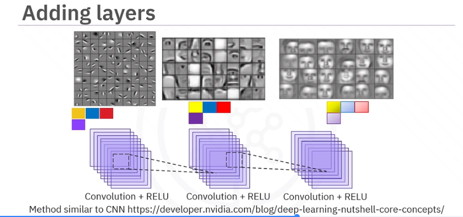
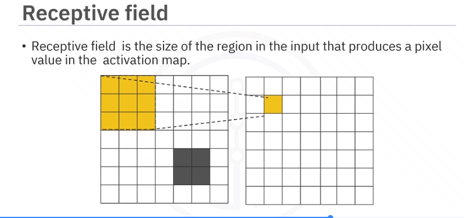
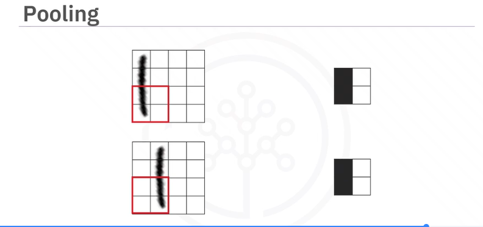
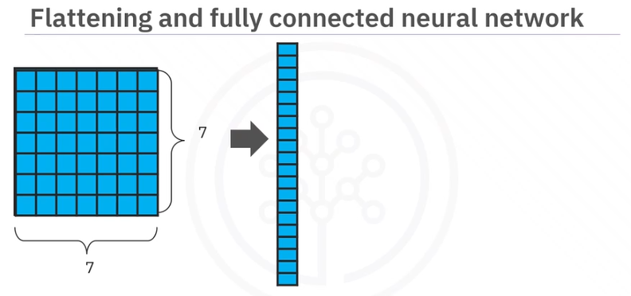
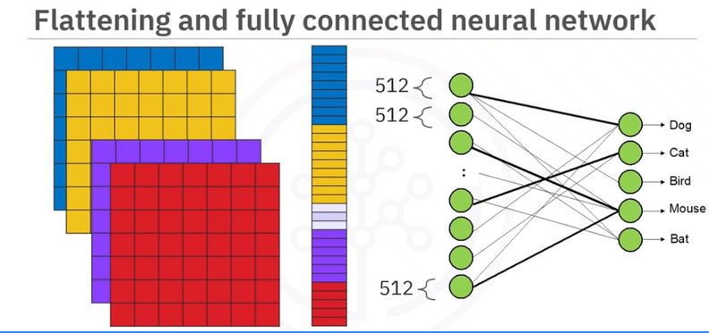

Convolutional Networks
- How CNNs build features
- Adding Layers
- Receptive Fields
- Pooling
- Flattening and fully connected neural layers
How CNNs build features
Kernels for features are stored in a stack. There could be many. They are each convolved with the image and the results is stored as a stack too. That is passed to the next convolutional layer.
We use kernels like neurons. The image passes by each one so each is like a "neuron".
Adding Layers
Here is the fun part...the next layer of kernels will convolve against the entire stack. So if it was a series of 2D convolutions before, it is now a 3D set of convolutions where the new kernels slide cubes through the original stack of kernels from first convolution. It gets higher order from there...
So you can have a lot of combinations of things and a lot of times you might have 3 feature outputs and those 3 feed into 2 feature maps. Those create 2 feature outputs.

Receptive Fields
Size of region in input that produces a pixel value in the activation map.

We can add kernels that have larger receptive fields to search for larger features without having to increase the size of the kernel.
Pooling
Reduces number of parameters and increases receptive field while preserving important features.
"Resizing the image"
Max-pooling is most popular.

Notice how even though slightly different, the "sense" is that there is some signal vertically on the left and the pooling makes the same output regardless.
Flattening and fully connected neural layers


All features lined up to be fully connected to neural net.